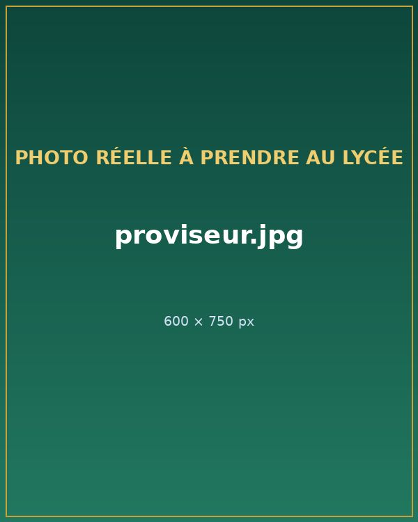
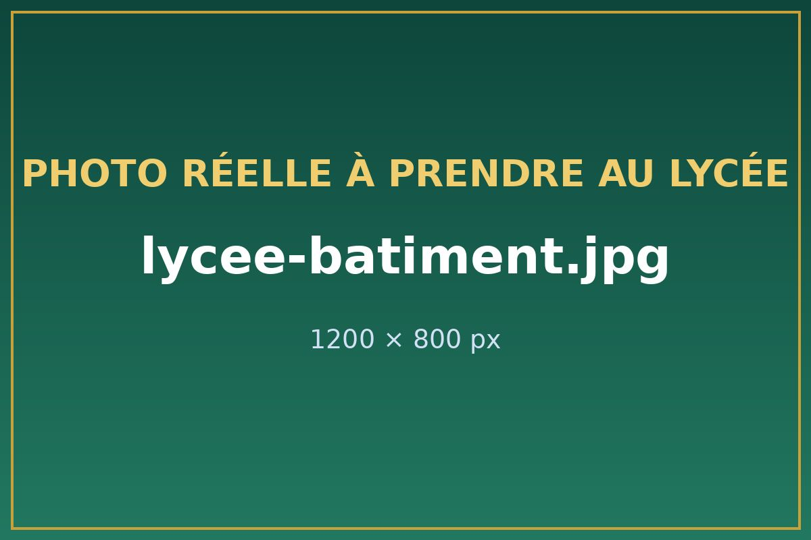

Le lycée
Un lycée général bilingue ancré à Bahouan depuis 1978.
Une éducation de qualité, un élève à la fois
Le Lycée de Bahouan est dédié à fournir une éducation de qualité et à encourager le développement personnel de chaque élève. Les matières, les épreuves et les informations utiles sont réunies sur ce site.
Le lycée est situé dans le village de Bahouan, arrondissement de Bamendjou, Région de l'Ouest. Le groupement se trouve à 1 548 mètres d'altitude, à 20 km de Bafoussam, sur l'axe Bafoussam-Douala.
Découvrir les admissions
Notre histoire
- XVIe-XVIIe siècleBahouan est fondé par Kenmogne, cadet des jumeaux fondateurs (Baham et Bayangam).
- 1978Ouverture du CEG de Bahouan.
- Septembre 1990Le CEG devient lycée bilingue.
- 2022-2024Plan de modernisation pédagogique et sportive.
- Aujourd'huiUn portail en ligne pour les élèves, les parents et l'administration.
L'équipe de direction
Administration en place pour l'année 2024-2025.
- ProviseurFeugang Jean-Marie
- Censeur du 1er cycleMme Nguimfack Armelle
- Censeur du 2e cycleM. Djomo Luc
- Surveillant généralM. Nguekam Thomas
- SecrétaireMme Fongang Laure
- Responsable informatiqueM. Tchouankeu Bertrand
- Responsable de l'orientationMme Mekam Rosine

Les infrastructures
- 34 salles de classeet un bloc administratif.
- Salles spécialiséesinformatique, SVT, physique et technologie.
- Servicesbibliothèque, infirmerie, gymnase et cantine.